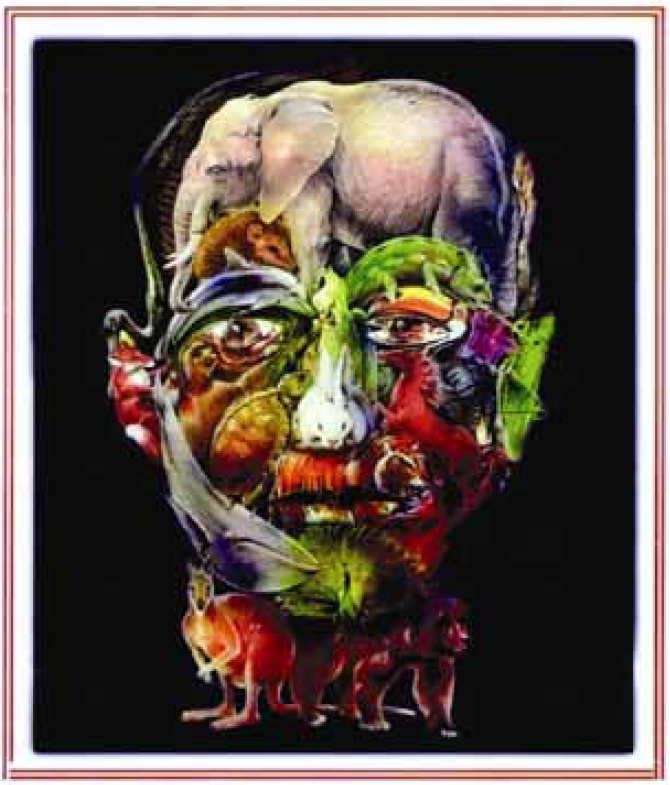

Quando o homem não trata bem a natureza, a
natureza não trata bem o homem.
Essa afirmativa reitera a necessária interação das diferentes espécies, representadas na imagem a seguir.
Disponível em http://curiosidades.spaceblog.com.br. Acesso em 10 out. 2008.
Depreende-se dessa imagem a